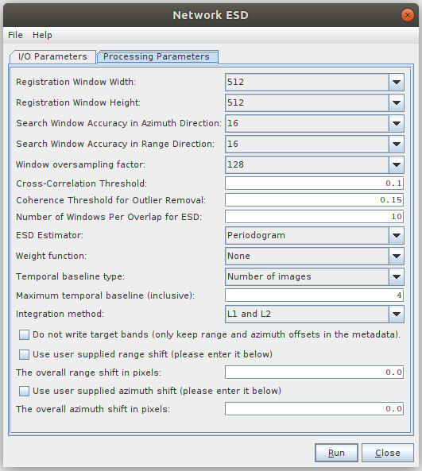

Sentinel-1 Enhanced Spectral Diversity
This operator follows the S-1 Back Geocoding
operator in the TOPS InSAR processing chain. It first estimates a
constant range offset for the whole sub-swath of the split S-1 SLC
image using incoherent cross-correlation. The estimation is done for
each burst using a small block of data in the center of the burst. The
estimates from all bursts are then averaged to get the final constant
range offset for the whole sub-swath.
The operator then estimates a constant
azimuth offset for the whole sub-swath using the Enhanced Spectral
Diversity (ESD) method. The ESD
approach exploits the data at the overlapped area of the adjacent
bursts. The estimation is done for a number of windows in every overlapped area and the final
azimuth offset is obtained by averaging all the estimations.
The estimated range and azimuth shifts are
saved in both the metadata of the output product and in an ASCII file
with master acquisition date and "_azimuth_shift" in the file name. The
file can be found at user's \.snap\var\log folder.
Finally, the operator performs range and
azimuth corrections for every burst using the range and azimuth offsets
estimated above with a phase
ramp method in the frequency domain.
Users
can skip the range and azimuth shift estimations by providing their own
range and azimuth shifts in the UI. The shifts can be previously
estimated by running the S-1 Azimuth Shift Estimation operator with
data of current sub-swath or other sub-swath.
Input
- The input to this operator is the resulting product from the
S-1 Back Geocoding operator. It is the co-registered master and slave images
for the same
sub-swath and same polarization (e.g. IW1 -
VV).
Output
- The output of the operator are the co-registered master and slave
bands in I/Q format with the range and azimuth shift corrections being performed to the slave bands.
Parameters Used
- Registration Window Width: Width of the sub-set of image used
for cross-correlation.
- Registration Window Height: Height of the sub-set of image used
for cross-correlation. Larger window generally implies accurate
estimation of the range shift and also means larger memory and longer
processing time.
- Search Window Accuracy in Azimuth Direction: The search accuracy
in azimuth direction for the maximum correlation. The search window
height is 2*Acc.
- Search
Window Accuracy in Range Direction: The search accuracy in range
direction for the maximum correlation. The search window width is
2*Acc. .
- Window Oversampling Factor: The oversampling factor for the
search window. The larger the factor, the better the achievable
accuracy, and the larger the computation cost.
- Cross-Correlation Threshold: Threshold
for normalized cross-correlation value. If the cross-correlation value
is greater than the threshold, then the estimated range offset is
considered valid, otherwise invalid.
- Coherence
Threshold for Outlier Removal: Pixels with coherence higher than the
threshold are used for the azimuth shift estimation.
- Number of Windows Per Overlap for ESD: The number of windows for azimuth offset estimation using ESD for each overlap area.
- Use user supplied shifts: If the checkbox is selected, then user
supplied azimuth and range shifts will be used in the correction.
- The overall azimuth shift in pixels: The user provided azimuth shift in pixels.
- The overall range shift in pixels: The user provided range shift in pixels.
